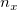
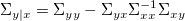
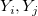
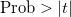
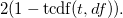

/math-88449ca5365fc85a4051a4f39cf72e31.png "n_y") ランダム変数Yのセットと
ランダム変数Yのセットと 偏相関係数は、調整変数が存在するときの2つの変数間の関係を説明するために使用されます。
ランダム変数Yのセットと

調整変数Xで、2つの変数XとYを統合すると、その分散共分散行列は以下のようになります。/math-90b8ce2774c5073b1124c7e9a4b41957.png "\begin{pmatrix}
\Sigma_{xx} & \Sigma_{xy} \\
\Sigma_{yx} & \Sigma_{yy}
\end{pmatrix}")
調整変数XのY変数の分散共分散行列は、以下で与えられます。

偏相関係数は以下のように計算されます。
/math-dc013e6067313a0ed2ca5041a49ac91b.png "\text{diag}(\Sigma_{y|x})^{-1/2} \Sigma_{y|x} \text{diag}(\Sigma_{y|x})^{-1/2}.")
偏相関係数がゼロという帰無仮説の検定に、t検定を使用できます。
自由度は、
/math-0613eb5b6527b5b309de243d94b08a47.png "df=n-n_x-2")
ここでnは、完全相関の計算における観測値の数です。欠損値のペアワイズ削除において、与えられた調整変数Xの2つの変数

の偏相関の計算でnはXの対の中と/math-9f58a707e9db8318aac1bb009020990d.png "(Y_i, Y_j), (Y_i, X), (Y_j, X)") の対の中の観測値の最小の数です。
の対の中の観測値の最小の数です。
t統計量は、
/math-14450f33ce8531f5a46e17c259af12b7.png "t = |r| \sqrt{ \frac {df} {1-r^2} }")
ここで r は偏相関係数です。
両端の有意水準レベル

は以下のように計算されます。